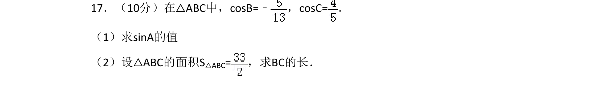
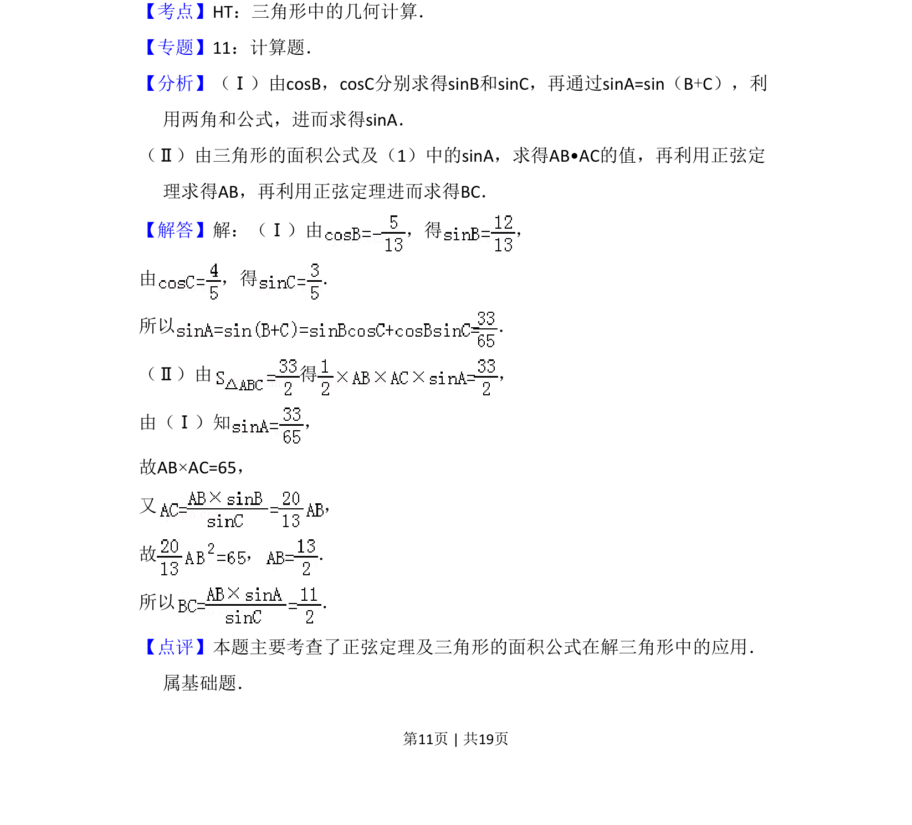

2008-理-17
考点：正弦定理 三角形面积 两角和的正弦公式
题面

摘要
在三角形中已知两角余弦求第三角正弦，并用面积公式和正弦定理计算边长。
关联考点
答案与解析


📄 原 PDF 第 11 页：
素材/真题/吉林/2008-2024·（吉林）数学高考真题/2008年高考数学试卷（理）（全国卷Ⅱ）（解析卷）.pdf
题干文本
17．（10分）在△ABC中，cosB=﹣ ，cosC=． （1）求sinA的值 （2）设△ABC的面积S△ABC=，求BC的长．
解析文本
【考点】HT：三角形中的几何计算．菁优网版权所有 【专题】11：计算题． 【分析】（Ⅰ）由cosB，cosC分别求得sinB和sinC，再通过sinA=sin（B+C），利 用两角和公式，进而求得sinA． （Ⅱ）由三角形的面积公式及（1）中的sinA，求得AB•AC的值，再利用正弦定 理求得AB，再利用正弦定理进而求得BC． 【解答】解：（Ⅰ）由 ，得 ， 由 ，得 ． 所以 ． （Ⅱ）由 得 ， 由（Ⅰ）知 ， 故AB×AC=65， 又 ， 故 ， ． 所以 ． 【点评】本题主要考查了正弦定理及三角形的面积公式在解三角形中的应用． 属基础题．